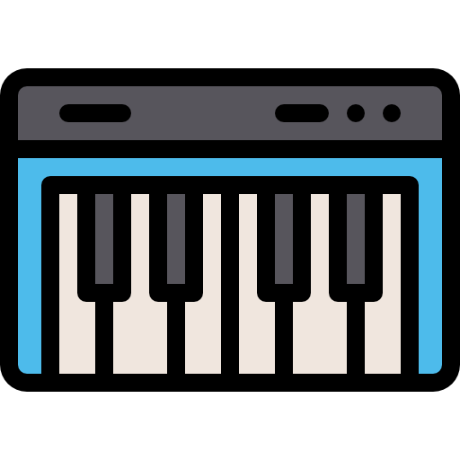

How I Make Music.

Piano
I've been playing piano since I was a kid. I started with Classical songs but I love playing all kinds of genres. Classical, pop, rock, jazz. I try to improve everyday. Learning the piano allowed me to explore more musical interests.
My accomplishments are being in piano competitions. Here are some of my results:
| Placing | Piano Piece | Composer | Year |
|---|---|---|---|
| 2nd | Waltz in A Minor | Chopin | 2012 |
| 2nd | Piano Sonata No. 8 | Beethoven | 2013 |
| 1st | Piano Sonata No. 11 | Mozart | 2014 |
Here's a resource on how to get started: Piano for Beginners.

DJ
Another way I make music is DJing. It's fun mixing songs and creating musical transitions. Ocasionally, I can DJ a party.
Producing
I also like making simple beats and electronic music for fun. Accomplishment would be I produced a few fully finished tracks and beats.